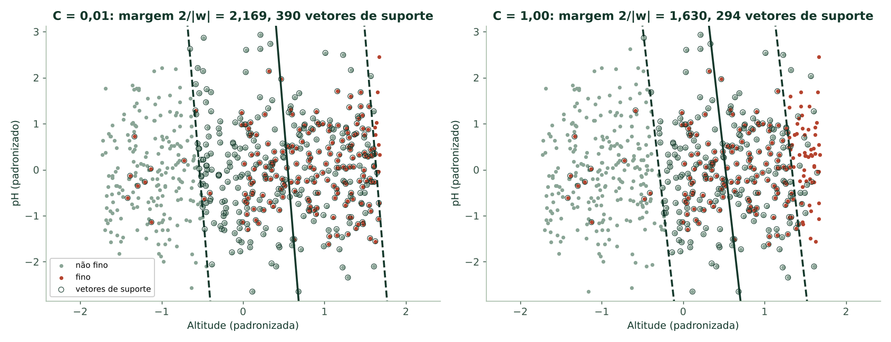
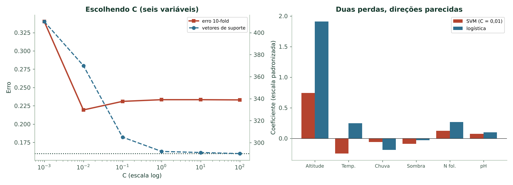

Máquinas de vetores de suporte lineares
O hiperplano de margem máxima, com violações pagas a um custo C — definido apenas pelos pontos na margem ou do lado errado.
Comece por aqui
A máquina de vetores de suporte (SVM) linear procura, entre todos os hiperplanos que separam as duas classes, o que deixa a maior margem — a maior faixa vazia entre as classes. Quando as classes não são separáveis, como quase sempre, ela admite violações da margem, cada uma com um custo proporcional ao quanto viola. O resultado depende só dos pontos que ficam na margem ou do lado errado: os vetores de suporte.
Escrita como minimização, a SVM linear é "perda hinge + penalidade ridge"; a regressão logística penalizada é "perda logística + penalidade ridge". As duas perdas são parecidas para pontos mal classificados e diferem nos bem classificados: a logística continua a puxá-los, a hinge os ignora a partir de uma distância. Por isso as duas fronteiras costumam ser parecidas, como mostra esta ficha.
O que é a SVM linear
A fronteira é o hiperplano \(f(x)=w^\top x+b=0\); classifica-se pelo sinal de \(f(x)\). Com os rótulos codificados como \(y=\pm1\), um ponto está corretamente classificado e fora da margem quando \(y\,f(x)\ge 1\). A largura da margem é \(2/\lVert w\rVert\): maximizar a margem é minimizar \(\lVert w\rVert\).

| Posição | \(y\,f(x)\) | Perda hinge | É vetor de suporte? |
|---|---|---|---|
| Do lado certo, fora da margem | > 1 | 0 | Não |
| Sobre a margem | = 1 | 0 | Sim |
| Do lado certo, dentro da margem | entre 0 e 1 | \(1-yf\) | Sim |
| Do lado errado | ≤ 0 | \(1-yf\ge1\) | Sim |
Pressupostos e como verificá-los
| Pressuposto ou cuidado | Por que importa | Como verificar |
|---|---|---|
| Variáveis padronizadas | A margem é medida em distância euclidiana. | scale = TRUE (padrão no e1071). |
| Fronteira aproximadamente linear | É o que o modelo representa. | Compare com o núcleo radial. |
| C escolhido por validação | Controla o compromisso viés-variância. | tune(). |
| Probabilidades | A SVM não as produz. | Platt (probability = TRUE). |
| Classes desequilibradas | A margem pode favorecer a maioria. | class.weights. |
Formulação e cálculo
Em que:
- \(w,\ b\)
- vetor normal ao hiperplano e intercepto
- \(\xi_i\)
- folga: quanto o ponto \(i\) viola a margem
- \(C\)
- custo de cada unidade de violação
- \(y_i\in\{-1,+1\}\)
- o rótulo
O problema equivale a minimizar a perda hinge com penalidade ridge:
A solução tem a forma \(w=\sum_i\alpha_iy_ix_i\), com \(\alpha_i>0\) apenas para os vetores de suporte: os demais pontos poderiam ser retirados sem mudar nada.
Exemplo numérico: três lotes, com altitude e pH padronizados e C = 1
O ajuste dá \(w=(1{,}2245;\ 0{,}0793)\) e \(b=-0{,}6364\).
| Lote | z altitude | z pH | f(x) | Classe | y·f | Perda hinge |
|---|---|---|---|---|---|---|
| 11 | 1,153 | −1,424 | 0,662 | +1 | 0,662 | 0,338 |
| 26 | −1,300 | 0,086 | −2,221 | −1 | 2,221 | 0,000 |
| 41 | −1,034 | −1,818 | −2,047 | −1 | 2,047 | 0,000 |
\[\begin{aligned}f &= 1{,}225\times1{,}153 \\ &\quad +0{,}079\times(-1{,}424) \\ &\quad -0{,}636 \\ &= 0{,}662.\end{aligned}\] O lote é fino (\(y=+1\)) e está do lado certo, mas dentro da margem: \(y f=0{,}662<1\), perda \(1-0{,}662=0{,}338\). Os lotes 26 e 41 estão do lado certo e longe da margem: perda zero, e não influenciam o ajuste.
Nos 600 lotes: 307 estão fora da margem com perda zero, 161 dentro da margem do lado certo e 132 do lado errado. O ajuste declarou 294 vetores de suporte — exatamente os 293 lotes com perda positiva mais um sobre a margem.
Propriedades
- A solução depende só dos vetores de suporte.
- Problema convexo: solução única, sem mínimos locais.
- C grande: margem estreita, menos violações, mais variância.
- A perda hinge não estima probabilidades.
- Com o núcleo linear, equivale a uma logística penalizada com outra perda.
- A versão com núcleos não lineares está na ficha SVM com núcleo radial.
Como interpretar os resultados
| Elemento | O que informa | Cuidado |
|---|---|---|
| Pesos w (padronizados) | Direção da fronteira. | Não são efeitos em log-odds. |
| Número de vetores de suporte | Quantos pontos definem a fronteira. | Muitos: classes muito sobrepostas. |
| Valor de decisão f(x) | Distância com sinal à fronteira. | Não é probabilidade. |
| Probabilidade de Platt | Logística ajustada sobre f(x). | Ajustada por validação interna. |
Como executar no R e em Python
Onde executar o código em Python
Não é preciso instalar nada: o Google Colab é um computador na nuvem, gratuito, que executa Python pelo navegador e já traz as bibliotecas usadas aqui (numpy, scipy e matplotlib).
svm(), do pacote e1071 (interface para a biblioteca LIBSVM), com kernel = "linear" e cost = C. As variáveis são padronizadas por padrão (scale = TRUE). tune() escolhe C por validação cruzada; probability = TRUE ajusta o modelo de Platt para as probabilidades. Para dados grandes, LiblineaR é muito mais rápido. Em Python, sklearn.svm.SVC(kernel="linear") ou LinearSVC.
library(e1071)
aj <- tune(svm, fino_f ~ alt + temp + chuva + somb + nfol + ph, data = cafe,
kernel = "linear", ranges = list(cost = 10^(-3:2)))
summary(aj)
aj$best.model
Exemplo de aplicação
Contexto dos dados
Os dados são fictícios e foram criados pelo autor: 600 lotes de café, cada um com a nota sensorial (escala SCA, de 70,0 a 86,1) e seis variáveis da lavoura — altitude (600 a 1.500 m), temperatura média (14 a 26 °C), chuva anual (mm), sombreamento (%), nitrogênio foliar (dag/kg) e pH do solo. Um lote é fino quando a nota é 80 ou mais (204 lotes, 34,0%). O processo gerador é conhecido e foi desenhado para ter as duas estruturas que os modelos aditivos não representam: um degrau de +4,6 pontos acima de 1.050 m de altitude e uma interação — o sombreamento melhora a nota quando a temperatura passa de 20,5 °C e a piora abaixo disso —, além de partes suaves em chuva, nitrogênio e pH e um erro de desvio-padrão 1,55. Altitude e temperatura têm correlação de −0,822, como na realidade. Como a verdade é conhecida, sabem-se os dois pisos: nenhum modelo de regressão pode ter erro quadrático esperado abaixo de \(\sigma^2=2{,}4025\), e nenhum classificador pode errar menos que o erro de Bayes, 0,1596. O mesmo conjunto atravessa as dez fichas dos grupos de árvores e de classificadores, o que permite comparar todos os métodos na mesma régua.
Código em R
# Máquinas de vetores de suporte lineares: exemplo completo ----
# Pacote: e1071 (interface para a biblioteca LIBSVM)
# Dados fictícios: 600 lotes de café (arquivo cafe.csv, pasta scripts/ do site).
# Baixe o arquivo para a pasta de trabalho, ou leia direto do endereço:
url <- "https://cassiushenrique.github.io/ModelosEstatisticos/scripts/cafe.csv"
cafe <- if (file.exists("cafe.csv")) read.csv("cafe.csv") else read.csv(url)
str(cafe) # nota, fino (0/1), alt, temp, chuva, somb, nfol, ph
cafe$fino_f <- factor(cafe$fino, levels = c(0, 1), labels = c("nao", "fino"))
table(cafe$fino_f)
library(e1071)
vars <- c("alt", "temp", "chuva", "somb", "nfol", "ph")
# ---- 1. Em duas dimensões, para ver a margem
m2 <- svm(fino_f ~ alt + ph, data = cafe, kernel = "linear", cost = 1, scale = TRUE)
m2$tot.nSV # número de vetores de suporte
plot(m2, data = cafe, formula = ph ~ alt) # região de decisão e vetores de suporte
# coeficientes na escala padronizada: w = soma(alfa_i y_i x_i)
w <- t(m2$coefs) %*% m2$SV; b <- -m2$rho
w; b; 2 / sqrt(sum(w^2)) # margem
# ---- 2. Seis variáveis: escolher C (cost) por validação cruzada
set.seed(1)
aj <- tune(svm, fino_f ~ alt + temp + chuva + somb + nfol + ph, data = cafe,
kernel = "linear", ranges = list(cost = c(0.001, 0.01, 0.1, 1, 10, 100)),
tunecontrol = tune.control(cross = 10))
summary(aj) # erro de cada C
plot(aj)
melhor <- aj$best.model
# ---- 3. Comparação com a regressão logística
g <- glm(fino ~ alt + temp + chuva + somb + nfol + ph,
data = transform(cafe, alt = scale(alt), temp = scale(temp), chuva = scale(chuva),
somb = scale(somb), nfol = scale(nfol), ph = scale(ph)),
family = binomial)
cbind(svm = as.vector(t(melhor$coefs) %*% melhor$SV), logistica = coef(g)[-1])
# ---- 4. Probabilidades pelo método de Platt
mp <- svm(fino_f ~ alt + temp + chuva + somb + nfol + ph, data = cafe,
kernel = "linear", cost = aj$best.parameters$cost, probability = TRUE)
p <- attr(predict(mp, cafe, probability = TRUE), "probabilities")[, "fino"]
# ---- 5. Uma variável nova faz o que a fronteira linear não faz: o degrau
cafe$acima <- as.numeric(cafe$alt >= 1050)
set.seed(1)
summary(tune(svm, fino_f ~ alt + temp + chuva + somb + nfol + ph + acima, data = cafe,
kernel = "linear", ranges = list(cost = aj$best.parameters$cost),
tunecontrol = tune.control(cross = 10)))$best.performance
A mesma análise em Python, com os resultados
Cole o código em um notebook do Google Colab ↗ e execute com Shift+Enter. Os valores abaixo são a saída desse código.
import numpy as np
# ------------------------------------------------------------------
# Bloco comum às fichas deste grupo: funções auxiliares e dados (cab16)
# ------------------------------------------------------------------
import numpy as np
from scipy.stats import norm
# ------------------------------------------------------------------
# Bloco comum às fichas deste grupo: funções auxiliares e dados (dados16)
# ------------------------------------------------------------------
import numpy as np
import pandas as pd
def le_csv(nome):
"""Lê o arquivo de dados da ficha: primeiro na pasta atual; se não
estiver lá (por exemplo, no Google Colab), direto do site."""
try:
return pd.read_csv(nome)
except FileNotFoundError:
return pd.read_csv('https://cassiushenrique.github.io/ModelosEstatisticos/scripts/' + nome)
# Dados fictícios: 600 lotes de café (arquivo cafe.csv, pasta scripts/ do site)
cafe = le_csv('cafe.csv')
ALT, TEMP, CHUVA = (cafe[k].to_numpy(float) for k in ('alt', 'temp', 'chuva'))
SOMB, NFOL, PH = (cafe[k].to_numpy(float) for k in ('somb', 'nfol', 'ph'))
NOTA = cafe['nota'].to_numpy(float); FINO = cafe['fino'].to_numpy(int)
NOMES=['alt','temp','chuva','somb','nfol','ph']
ROT={'alt':'Altitude','temp':'Temperatura','chuva':'Chuva','somb':'Sombreamento','nfol':'N foliar','ph':'pH'}
X=np.column_stack([ALT,TEMP,CHUVA,SOMB,NFOL,PH])
NC,PC=X.shape; SIGN=1.55
def f_nota(alt,temp,chuva,somb,nfol,ph):
deg=4.6*(np.asarray(alt)>=1050); rampa=0.0028*np.clip(np.asarray(alt)-700,0,None)
inter=np.where(np.asarray(temp)>20.5,0.052*np.asarray(somb),-0.030*np.asarray(somb))
agua=-2.6e-6*(np.asarray(chuva)-1450)**2
nitro=2.9*np.log(np.asarray(nfol)/1.6); acid=-1.9*(np.asarray(ph)-5.4)**2
return 74.0+deg+rampa+inter+agua+nitro+acid
def verdade(A): return f_nota(A[:,0],A[:,1],A[:,2],A[:,3],A[:,4],A[:,5])
# ------------------------------------------------------------------ fim do bloco comum
def c(v, d=4): return ('%.*f' % (d, v)).replace('.', ',')
def eqm(o, p): return float(np.mean((np.asarray(o) - np.asarray(p))**2))
def r2(o, p): return 1 - float(np.sum((np.asarray(o)-np.asarray(p))**2))/float(np.sum((np.asarray(o)-np.mean(o))**2))
def acur(o, p): return float(np.mean(np.asarray(o) == np.asarray(p)))
MU = verdade(X) # média verdadeira da nota
PVER = 1 - norm.cdf((80 - MU)/SIGN) # P(fino | x) verdadeira
ERRO_BAYES = float(np.mean(np.minimum(PVER, 1 - PVER)))
EQM_PISO = SIGN**2
def dobras(n, k, seed):
rg = np.random.default_rng(seed)
d = np.tile(np.arange(k), int(np.ceil(n/k)))[:n]; rg.shuffle(d); return d
def cv_reg(fabrica, A, y, k=10, seed=0, reps=1):
"""EQM por validação cruzada. fabrica() devolve um estimador sklearn novo."""
tot = []
for r in range(reps):
d = dobras(len(y), k, seed + 101*r); e = np.empty(len(y))
for j in range(k):
tr, te = d != j, d == j
m = fabrica().fit(A[tr], y[tr]); e[te] = y[te] - m.predict(A[te])
tot.append(float(np.mean(e**2)))
return float(np.mean(tot)), (float(np.std(tot, ddof=1)) if reps > 1 else 0.0)
def cv_clf(fabrica, A, y, k=10, seed=0, reps=1, prob=False):
"""Erro de classificação (e, se prob, log-loss e Brier) por validação cruzada."""
err = []; ll = []; br = []
for r in range(reps):
d = dobras(len(y), k, seed + 101*r); pred = np.empty(len(y)); pp = np.empty(len(y))
for j in range(k):
tr, te = d != j, d == j
m = fabrica().fit(A[tr], y[tr]); pred[te] = m.predict(A[te])
if prob: pp[te] = m.predict_proba(A[te])[:, 1]
err.append(float(np.mean(pred != y)))
if prob:
q = np.clip(pp, 1e-6, 1 - 1e-6)
ll.append(float(-np.mean(y*np.log(q) + (1 - y)*np.log(1 - q))))
br.append(float(np.mean((pp - y)**2)))
if prob: return float(np.mean(err)), float(np.mean(ll)), float(np.mean(br))
return float(np.mean(err)), (float(np.std(err, ddof=1)) if reps > 1 else 0.0)
def padroniza(A, ref=None):
ref = A if ref is None else ref
mu, sd = ref.mean(0), ref.std(0, ddof=1); return (A - mu)/sd, mu, sd
DADOS_TXT = ('600 lotes de café, nota sensorial (escala SCA, de 70 a 86) e seis variáveis de lavoura: '
'altitude, temperatura média, chuva anual, sombreamento, N foliar e pH. Lote "fino" = nota >= 80.')
# ------------------------------------------------------------------ fim do bloco comum
from sklearn.svm import SVC, LinearSVC
from sklearn.linear_model import LogisticRegression
from sklearn.preprocessing import StandardScaler
from sklearn.pipeline import make_pipeline
y=FINO; ys=2*y-1 # a SVM usa rótulos -1 e +1
print('LOTES DE CAFÉ:',DADOS_TXT)
print('Resposta: fino (+1) ou não (-1). Erro de Bayes = %s.'%c(ERRO_BAYES))
Z,mu,sd=padroniza(X)
print('\n'+'='*70)
print('PRIMEIRO, EM DUAS DIMENSÕES: altitude e pH, padronizadas')
Z2=Z[:,[0,5]]
print()
print('%10s %12s %12s %12s %10s %12s'%('C','w_alt','w_pH','b','n. vet. sup.','margem 2/|w|'))
for C in [0.01,0.1,1,10,100]:
m=SVC(kernel='linear',C=C).fit(Z2,ys); w=m.coef_[0]; b=m.intercept_[0]
print('%10s %12s %12s %12s %10d %12s'%(c(C,2),c(w[0]),c(w[1]),c(b),m.n_support_.sum(),c(2/np.linalg.norm(w))))
print()
print('C pequeno: margem LARGA, muitos lotes dentro dela (muitos vetores de')
print('suporte). C grande: margem estreita, a fronteira segue os lotes difíceis.')
print('\n'+'='*70)
print('A FUNÇÃO DE DECISÃO PARA UM LOTE, e a perda hinge')
m=SVC(kernel='linear',C=1).fit(Z2,ys); w=m.coef_[0]; b=m.intercept_[0]
for i in [10,25,40]:
f=float(Z2[i]@w+b); marg=ys[i]*f
print(' lote %d: z_alt = %s, z_pH = %s, f(x) = %s*%s + %s*%s + (%s) = %s'%(i+1,c(Z2[i,0],3),c(Z2[i,1],3),c(w[0],3),c(Z2[i,0],3),c(w[1],3),c(Z2[i,1],3),c(b,3),c(f,3)))
print(' classe real %+d, y*f = %s, perda hinge max(0, 1 - y*f) = %s'%(ys[i],c(marg,3),c(max(0,1-marg),3)))
fx=Z2@w+b; mg=ys*fx
print()
print(' lotes com y*f > 1 (fora da margem, perda zero): %d'%np.sum(mg>1+1e-6))
print(' lotes com 0 < y*f <= 1 (dentro da margem, certos): %d'%np.sum((mg>0)&(mg<=1+1e-6)))
print(' lotes com y*f <= 0 (do lado errado): %d'%np.sum(mg<=0))
print(' vetores de suporte declarados pelo ajuste: %d'%m.n_support_.sum())
print('Só os vetores de suporte determinam a fronteira: os %d lotes de perda'%np.sum(mg>1+1e-6))
print('zero poderiam ser removidos sem mudar nada.')
print('\n'+'='*70)
print('COM AS SEIS VARIÁVEIS: escolhendo C por validação cruzada')
print()
print('%10s %16s %14s'%('C','erro 10-fold','vet. suporte'))
best=(1,None)
for C in [0.001,0.01,0.1,1,10,100]:
f=lambda C=C: make_pipeline(StandardScaler(),SVC(kernel='linear',C=C))
er,_=cv_clf(f,X,y,10,0,5); nsv=f().fit(X,y)[-1].n_support_.sum()
print('%10s %16s %14d'%(c(C,3),c(er),nsv))
if er<best[0]: best=(er,C)
Cb=best[1]
m=make_pipeline(StandardScaler(),SVC(kernel='linear',C=Cb)).fit(X,y)
print()
print('Coeficientes (C = %s), na escala padronizada:'%c(Cb,3))
lg=make_pipeline(StandardScaler(),LogisticRegression(C=1e4,max_iter=3000)).fit(X,y)
wl=lg[-1].coef_[0]; ws=m[-1].coef_[0]
print('%-14s %12s %14s %18s'%('variável','SVM','logística','razão SVM/log.'))
for j,k in enumerate(NOMES): print('%-14s %12s %14s %18s'%(ROT[k],c(ws[j]),c(wl[j]),c(ws[j]/wl[j],3)))
cos=float(ws@wl/np.linalg.norm(ws)/np.linalg.norm(wl))
print('Cosseno do ângulo entre as duas direções = %s.'%c(cos))
print('A altitude domina as duas. Mas a temperatura troca de sinal: ela tem')
print('correlação %s com a altitude, e a SVM com C pequeno (regularização'%c(np.corrcoef(X[:,0],X[:,1])[0,1],3))
print('forte) reparte o efeito entre as duas, como faria a regressão ridge;')
print('a logística quase sem penalidade não reparte.')
print('\n'+'='*70)
print('SEM PADRONIZAR')
er1,_=cv_clf(lambda: SVC(kernel='linear',C=Cb,max_iter=200000),X,y,10,0,1)
er2,_=cv_clf(lambda: make_pipeline(StandardScaler(),SVC(kernel='linear',C=Cb)),X,y,10,0,1)
print(' erro 10-fold sem padronizar = %s | padronizado = %s'%(c(er1),c(er2)))
print('\n'+'='*70)
print('PROBABILIDADES: a SVM não as dá. Platt ajusta uma logística ao f(x).')
er,ll,br=cv_clf(lambda: make_pipeline(StandardScaler(),SVC(kernel='linear',C=Cb,probability=True,random_state=0)),X,y,10,0,3,prob=True)
er2,ll2,br2=cv_clf(lambda: make_pipeline(StandardScaler(),LogisticRegression(C=1e4,max_iter=3000)),X,y,10,0,3,prob=True)
print()
print('%-30s %10s %10s %10s'%('modelo','erro','log-loss','Brier'))
print('%-30s %10s %10s %10s'%('SVM linear + Platt',c(er),c(ll),c(br)))
print('%-30s %10s %10s %10s'%('regressão logística',c(er2),c(ll2),c(br2)))
print('%-30s %10s'%('erro de Bayes',c(ERRO_BAYES)))
print('\n'+'='*70)
print('UMA FRONTEIRA LINEAR NÃO VÊ O DEGRAU COMO DEGRAU')
print('Mas pode-se dar a ela uma variável nova: o indicador "altitude >= 1050".')
Xd=np.column_stack([X,(X[:,0]>=1050).astype(float)])
Xi=np.column_stack([Xd,(X[:,1]>20.5)*X[:,3],(X[:,1]<=20.5)*X[:,3]])
for nm,A in [('seis variáveis originais',X),('+ indicador do degrau',Xd),('+ degrau + sombra por clima',Xi)]:
er,_=cv_clf(lambda: make_pipeline(StandardScaler(),SVC(kernel='linear',C=Cb)),A,y,10,0,5)
print(' %-32s erro 10-fold = %s'%(nm,c(er)))
print('A SVM linear é exatamente tão boa quanto as variáveis que recebe.')
Resultados da execução
LOTES DE CAFÉ: 600 lotes de café, nota sensorial (escala SCA, de 70 a 86) e seis variáveis de lavoura: altitude, temperatura média, chuva anual, sombreamento, N foliar e pH. Lote "fino" = nota >= 80.
Resposta: fino (+1) ou não (-1). Erro de Bayes = 0,1596.
======================================================================
PRIMEIRO, EM DUAS DIMENSÕES: altitude e pH, padronizadas
C w_alt w_pH b n. vet. sup. margem 2/|w|
0,01 0,9210 0,0429 -0,5065 390 2,1692
0,10 1,1775 0,0892 -0,6295 307 1,6937
1,00 1,2245 0,0793 -0,6364 294 1,6299
10,00 1,2252 0,0795 -0,6365 294 1,6290
100,00 1,2267 0,0804 -0,6385 293 1,6268
C pequeno: margem LARGA, muitos lotes dentro dela (muitos vetores de
suporte). C grande: margem estreita, a fronteira segue os lotes difíceis.
======================================================================
A FUNÇÃO DE DECISÃO PARA UM LOTE, e a perda hinge
lote 11: z_alt = 1,153, z_pH = -1,424, f(x) = 1,225*1,153 + 0,079*-1,424 + (-0,636) = 0,662
classe real +1, y*f = 0,662, perda hinge max(0, 1 - y*f) = 0,338
lote 26: z_alt = -1,300, z_pH = 0,086, f(x) = 1,225*-1,300 + 0,079*0,086 + (-0,636) = -2,221
classe real -1, y*f = 2,221, perda hinge max(0, 1 - y*f) = 0,000
lote 41: z_alt = -1,034, z_pH = -1,818, f(x) = 1,225*-1,034 + 0,079*-1,818 + (-0,636) = -2,047
classe real -1, y*f = 2,047, perda hinge max(0, 1 - y*f) = 0,000
lotes com y*f > 1 (fora da margem, perda zero): 307
lotes com 0 < y*f <= 1 (dentro da margem, certos): 161
lotes com y*f <= 0 (do lado errado): 132
vetores de suporte declarados pelo ajuste: 294
Só os vetores de suporte determinam a fronteira: os 307 lotes de perda
zero poderiam ser removidos sem mudar nada.
======================================================================
COM AS SEIS VARIÁVEIS: escolhendo C por validação cruzada
C erro 10-fold vet. suporte
0,001 0,3400 410
0,010 0,2193 370
0,100 0,2310 305
1,000 0,2333 292
10,000 0,2333 291
100,000 0,2330 290
Coeficientes (C = 0,010), na escala padronizada:
variável SVM logística razão SVM/log.
Altitude 0,7392 1,9080 0,387
Temperatura -0,2501 0,2486 -1,006
Chuva -0,0624 -0,1879 0,332
Sombreamento -0,0900 -0,0307 2,928
N foliar 0,1249 0,2661 0,469
pH 0,0716 0,0999 0,717
Cosseno do ângulo entre as duas direções = 0,8963.
A altitude domina as duas. Mas a temperatura troca de sinal: ela tem
correlação -0,822 com a altitude, e a SVM com C pequeno (regularização
forte) reparte o efeito entre as duas, como faria a regressão ridge;
a logística quase sem penalidade não reparte.
======================================================================
SEM PADRONIZAR
erro 10-fold sem padronizar = 0,2350 | padronizado = 0,2183
======================================================================
PROBABILIDADES: a SVM não as dá. Platt ajusta uma logística ao f(x).
modelo erro log-loss Brier
SVM linear + Platt 0,2178 0,4547 0,1470
regressão logística 0,2300 0,4472 0,1469
erro de Bayes 0,1596
======================================================================
UMA FRONTEIRA LINEAR NÃO VÊ O DEGRAU COMO DEGRAU
Mas pode-se dar a ela uma variável nova: o indicador "altitude >= 1050".
seis variáveis originais erro 10-fold = 0,2193
+ indicador do degrau erro 10-fold = 0,2050
+ degrau + sombra por clima erro 10-fold = 0,2053
A SVM linear é exatamente tão boa quanto as variáveis que recebe.
| C | w altitude | w pH | b | Vetores de suporte | Margem 2/|w| |
|---|---|---|---|---|---|
| 0,01 | 0,9210 | 0,0429 | −0,5065 | 390 | 2,1692 |
| 0,10 | 1,1775 | 0,0892 | −0,6295 | 307 | 1,6937 |
| 1,00 | 1,2245 | 0,0793 | −0,6364 | 294 | 1,6299 |
| 100,00 | 1,2267 | 0,0804 | −0,6385 | 293 | 1,6268 |
| C | Erro 10-fold | Vetores de suporte |
|---|---|---|
| 0,001 | 0,3400 | 410 |
| 0,010 | 0,2193 | 370 |
| 0,100 | 0,2310 | 305 |
| 1,000 | 0,2333 | 292 |
| 100,000 | 0,2330 | 290 |
| Variável | SVM | Logística | Razão |
|---|---|---|---|
| Altitude | 0,7392 | 1,9080 | 0,387 |
| Temperatura | −0,2501 | 0,2486 | −1,006 |
| Chuva | −0,0624 | −0,1879 | 0,332 |
| Sombreamento | −0,0900 | −0,0307 | 2,928 |
| N foliar | 0,1249 | 0,2661 | 0,469 |
| pH | 0,0716 | 0,0999 | 0,717 |
| Modelo | Erro | Log-loss | Brier |
|---|---|---|---|
| SVM linear + Platt | 0,2178 | 0,4547 | 0,1470 |
| Regressão logística | 0,2300 | 0,4472 | 0,1469 |
| Variáveis | Erro 10-fold |
|---|---|
| As seis originais | 0,2193 |
| + indicador "altitude ≥ 1.050" | 0,2050 |
| + indicador + sombra separada por clima | 0,2053 |
Leitura: com C = 0,001 a penalidade domina, \(w\) é praticamente zero, e a SVM prevê "não fino" para todos (erro 0,3400 = prevalência). Com C = 0,01, o erro cai para 0,2193; daí em diante a margem estreita e o erro sobe ligeiramente. A SVM linear fica no nível da logística — o esperado, já que as duas têm fronteira linear.
As direções das duas fronteiras formam um ângulo de cosseno 0,8963: parecidas, não iguais. A diferença maior está na temperatura, que troca de sinal (−0,2501 na SVM, +0,2486 na logística). Com altitude e temperatura correlacionadas em −0,822, a SVM com C pequeno (regularização forte) reparte o efeito entre as duas, como faria a regressão ridge; a logística, quase sem penalidade, põe quase tudo na altitude.
A última tabela é a lição prática. A fronteira linear não representa o degrau em 1.050 m. Dando à SVM uma variável indicadora do degrau, o erro cai de 0,2193 para 0,2050 — ainda acima da árvore de três folhas (0,1920), mas perto dela. Acrescentar a interação sombra × clima não ajudou mais (0,2053). Um modelo linear é tão bom quanto a representação das variáveis; a ficha seguinte mostra como os núcleos constroem essa representação automaticamente.
Erros comuns
| Erro | Como evitar |
|---|---|
| Não padronizar | A margem é euclidiana; padronize. |
| Usar C padrão sem validar | Escolha C com tune(). |
| Tratar f(x) como probabilidade | Use Platt ou outro calibrador. |
| Interpretar w como efeitos em log-odds | São direções de uma fronteira de margem máxima. |
| Esquecer o desequilíbrio das classes | class.weights ou limiar. |
Alternativas e quando cada uma é preferível
| Procedimento | Quando preferir |
|---|---|
| Regressão logística | Quando se quer probabilidades e inferência. |
| SVM com núcleo radial | Fronteiras curvas. |
| LDA | Classes normais com covariância comum. |
Logística penalizada (glmnet) | Muitas variáveis, com seleção. |
| LiblineaR | Milhões de observações ou variáveis (texto). |
- Padronize as variáveis.
- Escolha C por validação cruzada.
- Compare com a logística.
- Se as probabilidades importam, use Platt ou a logística.
- Se o erro estaciona, experimente variáveis derivadas ou um núcleo não linear.
Referências desta ficha
- CORTES, Corinna; VAPNIK, Vladimir. Support-vector networks. Machine Learning, v. 20, n. 3, p. 273-297, 1995.
- VAPNIK, Vladimir N. The nature of statistical learning theory. 2. ed. New York: Springer, 2000.
- BOSER, Bernhard E.; GUYON, Isabelle M.; VAPNIK, Vladimir N. A training algorithm for optimal margin classifiers. In: ANNUAL WORKSHOP ON COMPUTATIONAL LEARNING THEORY, 5., 1992, Pittsburgh. Proceedings [...]. New York: ACM, 1992. p. 144-152.
- PLATT, John C. Probabilistic outputs for support vector machines and comparisons to regularized likelihood methods. In: SMOLA, A. et al. (ed.). Advances in large margin classifiers. Cambridge: MIT Press, 1999. p. 61-74.
- HSU, Chih-Wei; CHANG, Chih-Chung; LIN, Chih-Jen. A practical guide to support vector classification. Taipei: National Taiwan University, 2003. Disponível em: https://www.csie.ntu.edu.tw/~cjlin/papers/guide/guide.pdf.
- CHANG, Chih-Chung; LIN, Chih-Jen. LIBSVM: a library for support vector machines. ACM Transactions on Intelligent Systems and Technology, v. 2, n. 3, art. 27, 2011.
- HASTIE, Trevor; TIBSHIRANI, Robert; FRIEDMAN, Jerome. The elements of statistical learning. 2. ed. New York: Springer, 2009.
- JAMES, Gareth; WITTEN, Daniela; HASTIE, Trevor; TIBSHIRANI, Robert. An introduction to statistical learning: with applications in R. 2. ed. New York: Springer, 2021.
- MEYER, David et al. e1071: misc functions of the Department of Statistics, Probability Theory Group, TU Wien. R package. Disponível em: https://CRAN.R-project.org/package=e1071.
- R CORE TEAM. R: a language and environment for statistical computing. Vienna: R Foundation for Statistical Computing, 2026. Disponível em: https://www.r-project.org/.
- POSIT TEAM. RStudio: integrated development environment for R. Boston: Posit Software, PBC. Disponível em: https://posit.co/download/rstudio-desktop/.
- PEDREGOSA, Fabian et al. Scikit-learn: machine learning in Python. Journal of Machine Learning Research, v. 12, p. 2825-2830, 2011. (Função
sklearn.datasets.load_iris.) - VIRTANEN, Pauli et al. SciPy 1.0: fundamental algorithms for scientific computing in Python. Nature Methods, v. 17, p. 261-272, 2020. DOI: 10.1038/s41592-019-0686-2. (Funções do módulo
scipy.stats.) - HARRIS, Charles R. et al. Array programming with NumPy. Nature, v. 585, p. 357-362, 2020. DOI: 10.1038/s41586-020-2649-2.
- HUNTER, John D. Matplotlib: a 2D graphics environment. Computing in Science & Engineering, v. 9, n. 3, p. 90-95, 2007.
- GOOGLE. Google Colaboratory. Disponível em: https://colab.research.google.com/.
- As figuras desta ficha foram elaboradas pelo autor.

Prof. Dr. Cássius Henrique Xavier Oliveira
Professor · ICTIN/UFLA · Estatística, Confiabilidade e Ciência de Dados.
Conheça minha trajetória e projetos →